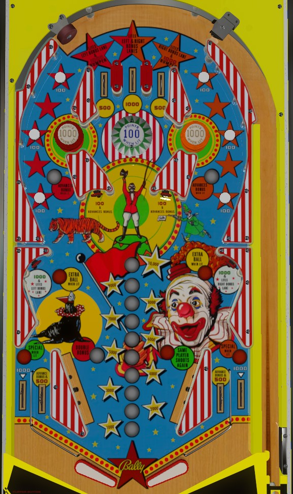

Circus is the 4-player version. Big Show is the otherwise identical 2-player version.
Not to be confused with Circus (Gottlieb, 1980) or Cirqus Voltaire (Bally Williams, 1997).
Be sure to plunge the center top lane to light both orbits so that the rollover buttons in the orbits award bonus advances. Shoot orbits, collecting top lanes if you missed them on the plunge, until the bonus is at least 10,000 points. Collect extra ball at the side standup targets if the bonus is between 10,000 and 18,000 inclusive. After collecting the extra ball, continue to max the bonus at 19,000 points, which unlights extra ball and lights the out lanes alternately for special. The side standup targets are too dangerous to be viable as backup plans for lighting orbits. Once bonus is maxed, keep shooting orbits.
The left top lane scores 500 points and lights the left orbit and left bumper. The right top lane scores 500 points and lights the right orbit and right bumper. The center top lane scores 1,000 points and lights both orbits, but lights no bumpers. It is important to try to collect a top lane on the plunge and after any return trip to the top of the table until both orbits are lit at least, and preferably both bumpers as well. Due to the complte lack of one way gates at the top of the table, the plunge and all returns to the top can end with a ball coming down an orbit instead of a top lane.
The two orbit shots each have 3 rollover buttons within. The buttons always score 100 points each. If the orbit is lit by collecting the corresponding top lane or side standup target, each rollover button also scores a bonus advance.
The center pop bumper always scores 100 points. The left and right passive bumpers, which can be bumped from both the orbits or the center chamber, score 100 points when not lit or 1,000 when lit.
Score 100 points and a bonus advance. Should be avoided at any cost due to the high risk of a fast moving center drain on the rebound.
Score 1,000 points and light the orbit on the same side. If base bonus is between 10,000 and 18,000 points inclusive, these targets are lit for extra ball.
Circus has a conventional in/out lane setup. In lanes score 500 points and a bonus advance. Out lanes score 1,000 points and are lit alternately for special when bonus is maxed out at 19,000 points.
Bonus is advanced by in lanes, center standup targets, and rollover buttons in lit orbits. Max bonus is 19,000 points. When bonus is between 10,000 and 18,000, the side standup targets are lit for extra ball. If bonus reaches 19,000 points, out lanes are lit alternately for special. Double bonus is awarded for free on balls 3 and 5 and cannot be earned on any other ball. There is no bonus holdover or mid-ball bonus collect.